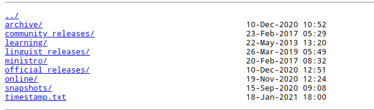
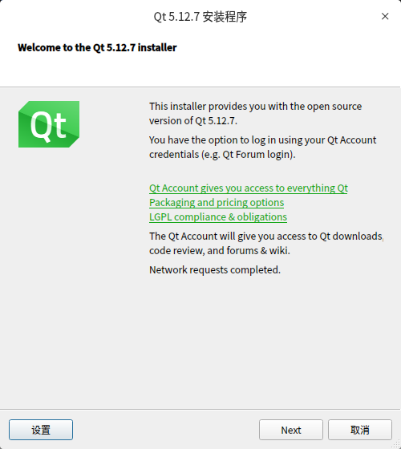
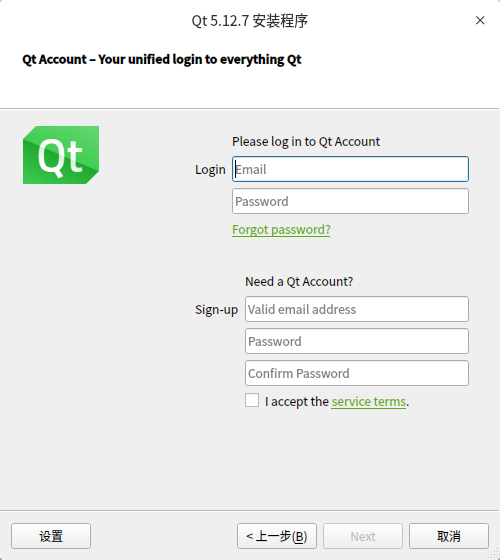
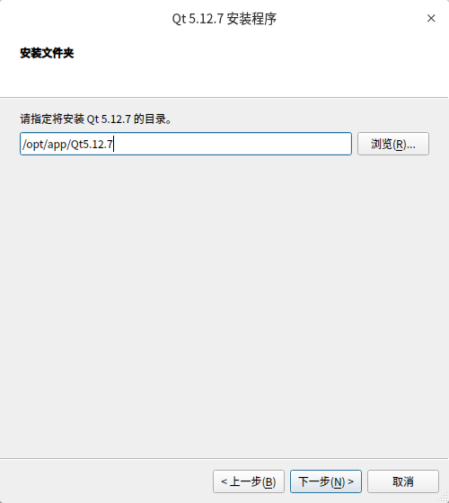
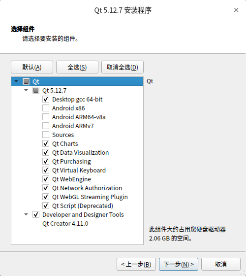
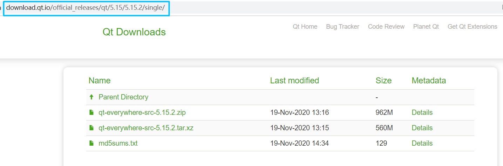
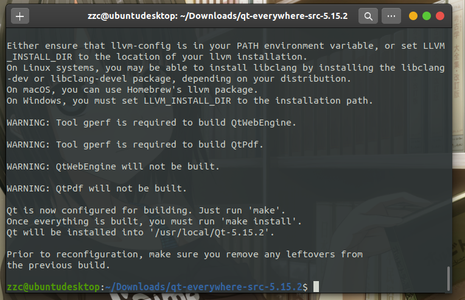

Linux 安装/编译 QT
[TOC]
离线安装版
离线安装没有 Arm 架构的，且 5.15 版本开始就不提供离线安装包了
下载
Qt 官方下载
可能会打不开且下载巨慢，不详细阐述
国内镜像站下载
国内著名的几个 Qt 镜像网站
- 中国科学技术大学：http://mirrors.ustc.edu.cn/qtproject/
- 清华大学：https://mirrors.tuna.tsinghua.edu.cn/qt/
- 北京理工大学：http://mirror.bit.edu.cn/qtproject/
- 中国互联网络信息中心：https://mirrors.cnnic.cn/qt/
我们以中科大镜像站为例
打开链接可以看到

目录说明
| 目录 | 说明 |
|---|---|
| archive | 各版本Qt 开发工具安装包，（可以下载 Qt 开发环境和源代码） |
| community_releases | 社区定制的 Qt 库，Tizen 版 Qt 以及 Qt 附加源码包 |
| development_releases | 开发版，在 Qt 开发过程中的非正式版本 |
| learning | Qt 的文档教程和示范视频 |
| ministro | Android 版本。 |
| official_releases | 正式发布版，长期支持版（可以下载Qt开发环境和源代码）。 |
| online | Qt 在线安装包 |
| snapshots | 预览版，最新的开发测试中的 Qt 库和开发工具 |
我们选择下载长期支持版 5.12.7 (qt-opensource-linux-x64-5.12.7.run)
安装
给安装包赋予运行权限
chmod +x qt-opensource-linux-x64-5.12.7.run
运行
./qt-opensource-linux-x64-5.12.7.run
安装主界面

点击下一步输入账号密码登录；如果没有可以直接在下面注册

一直下一步，选择安装路径

下一步选择组件，一般不安装 Android 和源码

安装后配置
安装完成，修改default.conf，执行
sudo vim /usr/lib/x86_64-linux-gnu/qt-default/qtchooser/default.conf
将第一行改为自己安装路径下的 bin 目录的路径，第二行改为 Qt 目录的路径，下面是我的配置
/opt/app/Qt5.12.7/5.12.7/gcc_64/bin
/opt/app/Qt5.12.7
源码编译安装
Qt5.15之后不提供离线安装包了，只提供在线安装；但是某些情况下我们并没有相应的网络环境适合在线安装，或者我们使用的处理器架构没有预编译的二进制文件，这时候就不得不学习离线安装了；这里以长期支持版5.12.10为例
你要问我为什么不交叉编译？我只想说，我不会，等我交叉编译环境配置好的话，我的开发板可能已经编译完了。
下载源码
具体下载地址和层级说明参考离线安装版 -> 下载
按照如图所示地址选择并下载 qt-everywhere-src-*.*.*.tar.xz

编译安装
一般开源代码编译安装都是相同的流程：config, make, make install
config
指定 install 的路径；不编译测试和示例，这些东西有用，但是可以等待需要的时候再编译；webengine 太难编了，反正目前用不到，等以后有机会再编；是的，现在我不得不编 webengine 了，请参考《编译 QtWebEngine》
./configure -prefix /opt/qt-5.12.10 -qt-xcb -fontconfig -system-freetype\
-opensource -confirm-license -nomake tests -nomake examples -skip webengine
在桌面系统，上面的 -qt-xcb -fontconfig -system-freetype 选项一定要加，第一个不加 UI 程序起不来，后面两个不加就不显示字体
-fontconfig 不能和 -qt-freetype 搭配，会出现以下报错 ，大概意思就是要用 -system-freetype
ERROR: Feature ‘fontconfig’ was enabled, but the pre-condition ‘!config.msvc && features.system-freetype && libs.fontconfig’ failed.
config 的过程中会让选开源版还是商业版，然后还有一个同意开源协议，加上 -opensource -confirm-license 就不用手动选择和确认了；漫长的等待后就会看到以下结果：虽说程序员从不关心 warning，但有些时候还是可以注意一下下，根据提示安装缺少的依赖
# 这是QT官网推荐的
sudo apt install libfontconfig1-dev libfreetype6-dev\
libx11-dev libxext-dev libxfixes-dev libxi-dev\
libxrender-dev libxcb1-dev libx11-xcb-dev\
libxcb-glx0-dev libxkbcommon-x11-dev
# 这是我在ubuntu 20.04上面根据警告和错误日志额外安装的
sudo apt install build-essential mesa-common-dev libdbus-1-dev
# 这俩是qtdoc的，要编译文档才装，因为这比较大
sudo apt install libclang-dev llvm

make
make -j$(nproc)
这个就是更漫长的等待了；在 FT2000/4 上面耗时 95min 左右
make install
sudo make install
编译文档
文档需要单独编译，然后就可以 F1 跳转了
make docs -j$(nproc)
sudo make install
在 FT2000/4 上面耗时 57min 左右
编译过程中可能遇到的问题
internal compiler error: Killed (program cc1plus)
内存不够了，加虚拟内存，请参考《Linux 创建交换文件 swapfile》
第一次使用可能出现的问题
Failed to find “GL/gl.h” in “/usr/include/libdrm”
如果是自己编译的不会有这个问题，因为之前装过了
sudo apt install mesa-common-dev -y
Qt Creator 启动失败
sudo apt install libxcb-xinerama0
参考文档
由于个人水平有限，文中若有不合理或不正确的地方欢迎指出改正